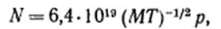

электронный
ресурс по учебной дисциплине 1-58 01 01 - "ИНЖЕНЕРНО-ПСИХОЛОГИЧЕСКОЕ ОБЕСПЕЧЕНИЕ ИНФОРМАЦИОННЫХ ТЕХНОЛОГИЙ"
|
||
| Оглавление | Программа | Теория | Практика | Контроль знаний | Об авторах | ||
|
Практика
ЛАБОРАТОРНАЯ РАБОТА №11 Изучение процесса металлизации Цель работы: Изучить основные характеристики процесса металлизации. Написать программу и построить зависимости выходных параметров от входных. Теоретические сведения Процесс металлизации состоит в реализации межкомпонентных соединений с низким сопротивлением и создании контактов, обладающих низким сопротивлением, к областям n+ и р+-типа, а также к слоям поликристаллического кремния. Требованием, предъявляемым к структурам с металлизацией, является стабильность при функционировании прибора, т.е. адгезия металла, электромиграция (перекос материала под действием тока большой величины) и коррозия не должны оказывать значительного воздействия на надежность прибора. Кроме того, необходимо, чтобы структуру можно было легко сформировать с использованием простого процесса. Металлизацию значительной части изготавливаемых в настоящее время кремниевых МОП и биполярных интегральных схем выполняют из алюминия или его сплава. Поскольку Аl имеет низкую величину удельного сопротивления при комнатной температуре (~ 2,7 мкОм*см), а значение этого параметра для его сплавов на 30% выше, применение указанных материалов удовлетворяет требованию низкого сопротивления контакта. Алюминий и его сплавы обладают хорошей адгезией к термическому SiO2 и осажденным силикатным стеклам — теплота образования Аl2О3 выше, чем SiO2. Несмотря на эти преимущества, использование Аl при изготовлении СБИС, обладающих мелкими переходами, часто сталкивается с трудностями, связанными с электромиграцией и коррозией. Однако, как будет показано ниже, существуют приемлемые пути решения этих проблем. Электромиграция может быть уменьшена путем подбора характеристик осажденных пленок, а коррозию можно свести к минимуму тщательной разработкой методов изготовления и герметизация СБИС. Металлизацию СБИС, как правило, проводят в вакуумных камерах (5). На рис. 1 схематически показана вакуумная система. Камера представляет собой вертикальный цилиндрический реактор колонкового типа из нержавеющей стали с базовым уплотнением. Предварительная откачка камеры производится форвакуумным насосом типа механического роторнопластинчатого насоса или комбинацией механического насоса и цеолитовых молекулярных ловушек, охлаждаемых жидким азотом. Рисунок 1 – Вакуумная система Высоковакуумные системы откачки могут состоять из охлаждаемой жидким азотом ловушки и паромасляного диффузионного насоса, ловушки и криогенного насоса, охлаждаемого гелием, с замкнутым циклом откачки. Малопроизводительная система откачки может включать ловушку, титановый сублимационный насос и ионно-сорбционный насос Выбор системы откачки зависит от требуемой скорости откачки, предельно достижимого давлении (за приемлемое время), желаемого качества получаемой пленки, метода осаждения пленки и затрат. В традиционных системах откачки используются паромасляные диффузионные насосы. во вероятность загрязнения пленки парами масла способствует применению турбомолекулярных или криогенных насосов. Криогенные насосы действуют как ловушки и должны периодически регенерироваться, турбомолекуляриые и диффузионные насосы работают как перекачивающие насосы, прокачивая газ через себя. Высоковакуумные системы откачки создают в камере низкое давление, которое необходимо для проведения процесса осаждения. Это низкое давление называют рабочим или основным давлением. Например, для систем осаждения алюминия методом испарения рабочее давление может составлять 6,6*10-5 Па во при включении дополнительных источников нагрева давление в камере может подниматься на порядок величины в более. Давление может повышаться и далее при нагреве источника испарения. Для уменьшения времени процесса осаждения, включающего период откачки, операцию очистки системы необходимо разбить на несколько этапов. Все компоненты камеры подвергаются химической очистке и сушке. Как правило, для уменьшения адсорбции паров воды на внутренних поверхностях камеры со свежим покрытием прн контакте с атмосферой в каналах охлаждения камеры поддерживается циркуляция подогретой воды. Любые пленочные образования на внутренних поверхностях камеры периодически удаляют для того, чтобы устранить основной источник захвата атмосферных газов. При формировании МОП-приборов существенным является исключение загрязнений натрием. Это возможно достичь путем очистки подложек перед нанесением пленки в растворах HF, устранения поверхностного контакта с любыми внутренними частями установки осаждении и использования источников чистого металла. Подобные меры предосторожности должны соблюдаться и при осаждении методом ионного распыления. В системах ионного распыления поддерживается давление аргона ~1 Па. Несмотря на относительно высокое давление, к процессу ионного распыления предъявляются такие же требования, как к процессу вакуумного испарения, поскольку другие газы (например, пары воды и кислород) могут оказать вредное влияние на качество пленки, если их парциальное давление составит величину ~10-2 Па. Дополнительным фактором является чистота активного газа аргона. Таким образом, для поддержания чистоты процесса линии, соединяющие источник газа с камерой распыления, должны быть чистыми и вакуумно-плотными. В системах ионного распыления между ловушкой и высоковакуумной системой откачки должен быть расположен вентиль, регулирующий натекание. Давление аргона может поддерживаться уменьшение эффективной скорости откачки при сохранении полной скорости удаления паров воды ловушкой. Предполагая, что вакуумная камера объемом V не имеет утечек, соединена с насосом необходимой мощности, а основные ограничения накладываются дегазацией паров воды, давление Р в камере в любое время t после начала откачки определяется приблизительным соотношением (1) где Р0— исходное давление. S – скорость откачки. Q — скорость дегазации паров воды с внутренних поверхностей системы. После первого часа откачки на давление в системе преобладающее влияние оказывает второй член уравнения (1) и Р=Q1/S. где Q1 — скорость дегазации после ~1 ч откачки. Отметим, что Q слабо зависит от времени, поскольку в конечном итоге источник обедняется. Эта особенность вакуумных систем приводит к использованию загрузочных шлюзовых камер, когда подложки вводятся в рабочую камеру через шлюз, который периодически откачивается от атмосферного до пониженного давления. Подложки при пониженном давлении переносятся через загрузочный шлюз в рабочую камеру, при этом дегазации должны быть подвергнуты только подложки, а не вся внутренняя поверхность камеры. После завершения процесса осаждения пленки подложки переносятся в ту же или другую шлюзовую камеру и извлекаются из системы. Использование таких систем в промышленном оборудовании получения пленок возрастает, так как производительность установок с загрузочными камерами выше по сравнению с производительностью однокамерных установок (при использовании пластин диаметром 100 мм н более). В приведенном описании применительно к операции получения пленки использован термин «процесс», так как кроме осаждения пленки в системах с загрузочной шлюзовой камерой проводится также реактивное ионное и плазменное травление. Контроль толщины пленки в процессе осаждения. В производстве СБИС существенным фактором является контроль толщины токопроводящей пленки, поскольку меньшая по сравнению с требуемой толщина пленки может привести к избыточной плотности тока и отказам при функционировании прибора. В то же время излишняя толщина может создать проблемы при проведении операции травления. Использование датчиков контроля толщины пленки является обычным при осаждении пленок методами испарения и магнетронного распыления, когда подложки расположены на держателе планетарного типа. В некоторых процессах магнетронного распыления толщина пленки не контролируется во время процесса осаждения, а измеряется после распыления. Наиболее часто употребляемым датчиком контроля толщины пленок является пластика резонатора, изготовленного из кристалла кварца. Пластина ориентирована относительно главных кристаллических осей, так что ее резонансная частота относительно нечувствительна к небольшим колебаниям температуры. Акустический импеданс и дополнительная масса любой осажденной на резонатор пленки вызывает изменение частоты, которое может быть точно измерено. После калибровки датчика в установке осаждения он может быть использован для управления скоростью осаждения пленки так же, как и окончательной толщиной осажденной пленки. Кристалл резонатора имеет ограниченный срок службы, по истечении которого он должен быть заменен. Однако при этом нет необходимости в перекалибровке датчика, если система осаждения не претерпела изменений. Резонатор имеет ограниченный срок службы вследствие того, что соотношение между ∆f и ∆М сохраняется неизменным только при ∆f/f0≤0,05, где ∆f — изменение частоты резонатора, ∆М — дополнительная осажденная масса, f0 –начальная частота резонатора. Калибровать такие системы и измерять толщину пленки, полученной в процессе без использования датчиков управления, можно по крайней мере двумя способами. Простейший метод включает в себя использование микровесов для взвешивания подложки до и после осаждения. С учетом объемной плотности пленки ρD увеличение массы ∆m связано с толщиной t соотношением (2) (2) и следовательно (3) где А – площадь пленки. Согласно другой методике, используют прибор, измеряющий профиль поверхности пленка. Тонкое перо, обычно алмазное, прочерчивает поверхность подложки и фиксирует высоту ступеней, образованных в областях, где пленка стравлена или поверхность подложки была замаскирована во время осаждения. Полная высота ступеньки определяется из измерений дифференциальной емкости или индуктивности. Калибровку систем измерения толщины пленки проводят с использованием периодически проверяемых стандартных образцов. С помощью таких приборов может быть измерена толщина пленки менее 10нм. Другие методы измерения толщины проводящей пленки включают методы оптической интерференции и измерения вихревого тока. Приложение кинетической творим газов. В кинетической теории газов имеются два общих понятия, полезных для описания процесса физического осаждения из парогазовых смесей. Первым понятием является интенсивность бомбардировки газовыми молекулами облучаемых в камере поверхностей. (4) где N — интенсивность бомбардировки (число молекул см-2*с-1) для молекул газа массой m при температуре T(K) и давлении р. Уравнение (4) может быть переписано в виде  (5) где М — масса грамм*моля; р — давление (Па). С помощью интенсивности бомбардировки можно оценить возможные эффекты, происходящие в процессе осаждения пленки в присутствии остаточных или умышленно вводимых газов. Вторым полезным понятием является понятие свободной длины пробега молекулы газа
где σ —диаметр молекулы газа. Для остаточных газов, таких, как He, О2, N2, Н20. Часто присутствующих в вакуумных системах, величины σ лежат в диапазоне 0,2—0,5 нм. Таким образом, для воздуха при постоянном давлении произведение (7) Поскольку столкновения являются статистическим явлением, доля общего числа молекул n0 не испытывающих столкновений на расстоянии d равна (8) Интенсивность испарения металла из расплава оценивают с использованием уравнения Герца—Киудсена (9) где М, — число молекул на единицу площади в единицу времени; m — молекулярная (атомная) масса; k — константа Больцмана: T—температура поверхности источника (К); рe— равновесное давление пара испаряемого вещества. Задание для выполнения лабораторной работы Каково содержание кислорода в пленках А1, осаждаемых со скоростью Варианты заданий:
Порядок выполнения работы 1. Напишите программу, обеспечивающую решение задачи. 2. Постройте зависимости выходных параметров от входных. 3. Оформите отчет и защитите лабораторную работу. Содержание отчета 1. Цель работы. 2. Краткие теоретические сведения. 3. Решение задачи. 4. Код программы и скриншоты рабочих окон. 5. Зависимости выходных параметров от выходных. 6. Выводы по работе. Контрольные вопросы 1. Что такое процесс металлизации? 2. Какие требования предъявляют к структурам с металлизацией? 3. Какие металлы используют для выполнения процесса металлизации? В чем достоинства этих металлов? 4. Опишите структуру вакуумной системы, в которой проводят процесс металлизации. 5. Как проводится контроль толщины пленки в процесса осаждения при проведении металлизации? Практика
|
| (С) БГУИР |